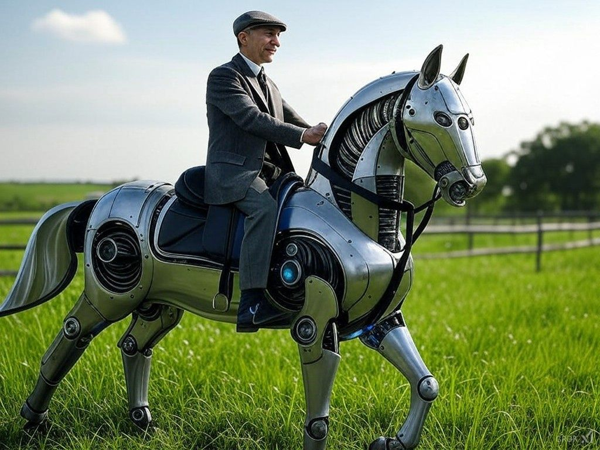

"האם אנחנו הסוסים שהולכים להיות מוחלפים במכוניות?"
פורסם במקור ב LinkedIn
"האם אנחנו הסוסים שהולכים להיות מוחלפים במכוניות?"
זו שאלה ששמעתי לאחרונה, והיא בהחלט מעלה מחשבה.
יש את האמרה הידועה של הנרי פורד (יצרן הרכב המסחרי הראשון): "אם הייתי שואל את האנשים מה הם רוצים, הם היו מבקשים סוס מהיר יותר", ולכן הדאגה של אנשים מבינה מלאכותית היא שהיא תחליף אותם ואת העבודה הידנית כפי שמנוע החליף את הסוס.
אני אוהב את האנלוגיה הזו, אבל לדעתי חסר בה משהו קריטי - כשמכוניות החליפו סוסים, אנשים עדיין נדרשו לנהוג בהן.
הסוסים לא הוחלפו במכוניות, הם הוחלפו במנועים.
מה עשו בני האדם?
הם הסתגלו ויצרו מקצועות חדשים: מכונאים, פקחי תנועה, מדריכי נהיגה, ואפילו מעצבי מכוניות.
העניין הוא שאנחנו נוטים לראות טכנולוגיה חדשה דרך הפריזמה של "החלפה", כשבפועל מדובר ב"העצמה".
הכרזת ה-Copilot של מיקרוסופט, שהחליטה לשלב AI בכל כלי העבודה שלה, מדגימה בדיוק את זה.
המטרה אינה להחליף אותנו אלא לתת לנו מנוע חזק יותר להניע את העשייה שלנו.
כמו שאמר מנכ"ל Nvidia, ג'נסן הואנג: "AI תעשה 50% מהעבודה עבור 100% מהאנשים."
סוסים לא יכלו ללמוד לנהוג במכוניות, אבל בני אדם?
אנחנו יכולים ללמוד לעבוד עם בינה מלאכותית.
אנחנו לא הסוסים באנלוגיה הזו - אנחנו הנהגים.
השאלה שנותרת בעינה היא איך כל אחד מאיתנו ישתמש במנוע החדש הזה כדי ליצור חדשנות וערך.
אני רואה בטכנולגיה הזו יתרון עצום עבור כל אחד מאיתנו, ומציע לאמץ אותה - לא לפחד ממנה 🚀
בתמנה: הנרי פורד רוכב על סוס רובוטי
נוצר ע"י X/Grok
